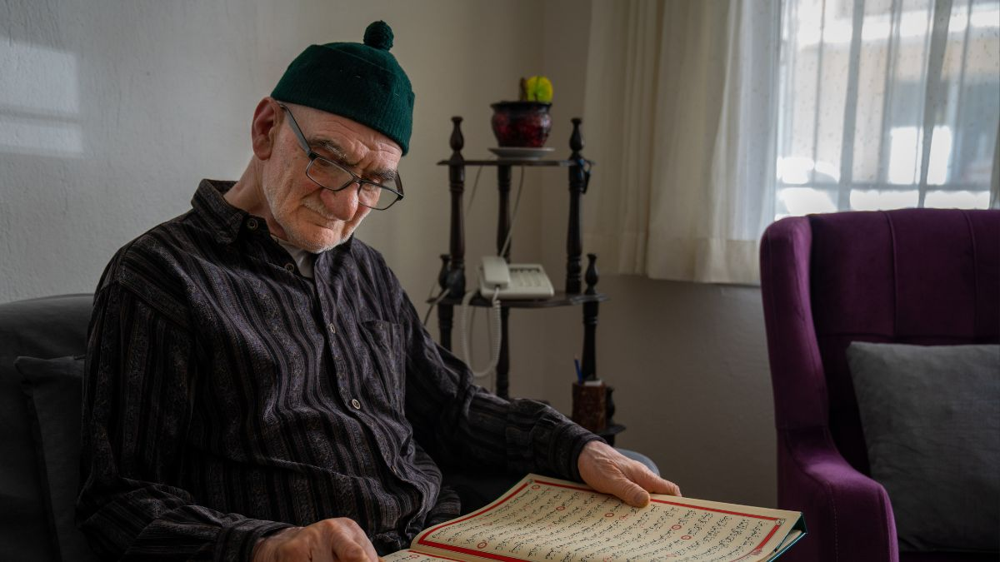

Règles de Tajwid que tout musulman devrait connaître (avec exemples) 12 septembre 2025 en savoir plus
5 raisons pour lesquelles vous devriez essayer de faire le khatam du Coran pendant le Ramadan 6 février 2025 en savoir plus
Pourquoi des millions de musulmans font le khatam du Coran pendant le ramadan et pourquoi vous devriez le faire aussi 5 février 2025 en savoir plus
Apprentissage du Coran : histoires de prophètes dans la sourate Al-Baqarah 27 avril 2024 en savoir plus
Apprentissage du Coran : leçons sur la sincérité dans la sourate Al-Ikhlas 1er avril 2024 en savoir plus
Apprentissage du Coran : l'histoire de la sourate Al-Fil et de l'éléphant 14 mars 2024 en savoir plus
 Apprentissage du Coran : Explorer les thèmes de la sourate Al-Kafirun 1er mars 2024 en savoir plus
Apprentissage du Coran : l'unité dans la diversité avec la sourate Al-Kafirun 27 février 2024 en savoir plus
Apprendre le Coran : le pouvoir de réciter quotidiennement la sourate An-Nas 18 février 2024 en savoir plus
Parcours d'apprentissage du Coran : comprendre la signification de la sourate An-Nas 16 février 2024 en savoir plus
Apprentissage du Coran : 5 façons d'enseigner la sourate Al-Falaq aux enfants 8 février 2024 en savoir plus